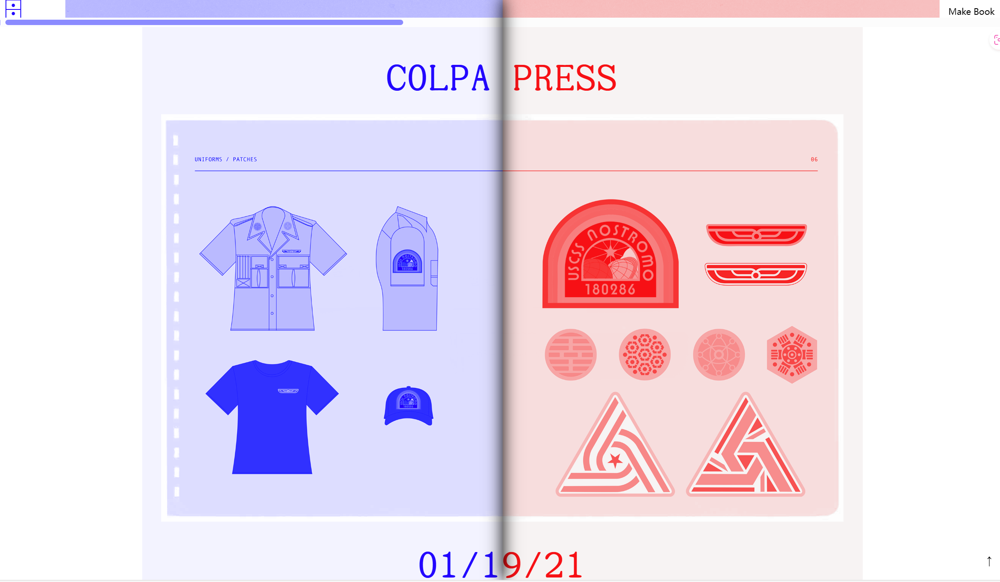
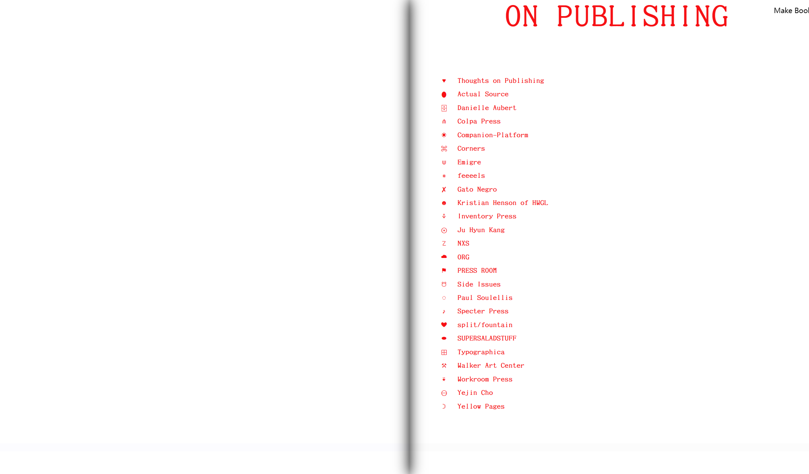
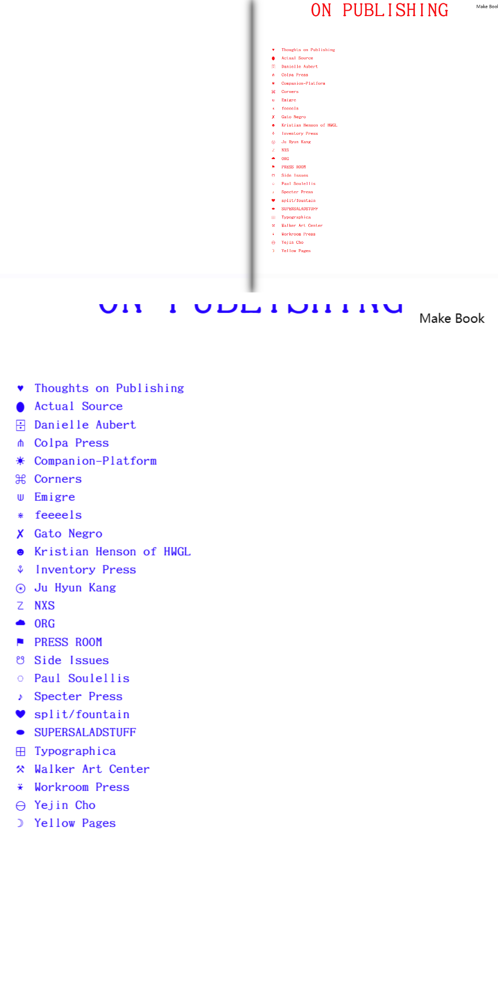

내용과 형식의 관계
간결하고 화사한 얼굴 칼라가 시각적으로 편안하며, 책의 형태로 디자인하면 독자의 몰입감을 높여주고, 독서의 흥미도 높아집니다.
웹페이지 사이의 구성
한 페이지 스크롤 방식을 채택하고 잘 설계된 명확한 디렉토리 구조를 통해 복잡한 정보를 읽을 때 여전히 좋은 안내 감각을 유지할 수 있습니다.이 단일 페이지는 딥러닝에 적합하도록 설계되었으며, 독자는 페이지를 자주 바꾸지 않고도 지속적으로 정보를 얻을 수 있다.
PC/모바일 접속 시 차이
PC 웹 페이지에서는 책의 디자인으로, 모바일 페이지에서는 한 페이지로 미끄러지는 형태로 간결하고 편안하다.
